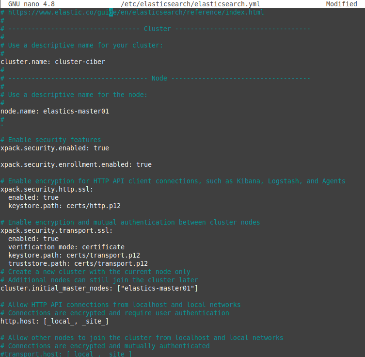
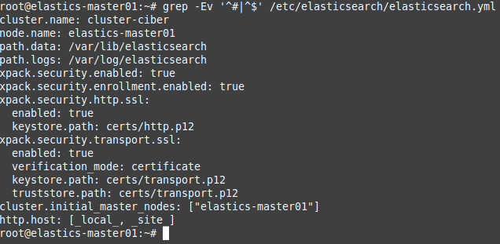

3.1.2 Instalación y configuración de Elasticsearch
1. Nombrado del host y DNS
Antes de comenzar con el proceso de instalación y configuración de elasticsearch en el servidor, hay que definir el archivo /etc/hosts para resolución de nombres de dominio local, de esta manera, no se depende de un servidor de DNS. Los hostnames son importantes porque la configuración de elasticsearch solicita hostnames y de esta manera se podrá resolver la IP de cada host.
Para este escenario, el hostname es elastics-master01.
root@elastic-master01:~#hostnamectl set-hostname elastics-master01
Como no se tiene un servidor DNS, hay que actualizar los registros DNS localmente en el archivo de hosts. Para ello, se añade la siguiente línea:
192.168.0.254 elastics-master01

Figura 1. Fichero hosts.
2. Instalación
Una vez se ha establecido el nombre de host, ya se puede comenzar con el proceso y para ello, en primer lugar hay que realizar una actualización de los paquetes locales del equipo ubuntu server.
root@elastic-master01:~#apt update -y && apt upgrade -y
Los componentes de Elastic Stack no están disponibles en los repositorios predeterminados de Ubuntu, por lo que hay que agregarlos a la lista de fuentes de paquetes de Elastic.
Todos los paquetes de Elastic Stack están firmados con la clave de firma de Elasticsearch para proteger su sistema contra la suplantación de paquetes. Su administrador de paquetes considerará confiables los paquetes autenticados con la clave. Por lo tanto, en este punto, hay que importar la clave GPG pública de Elasticsearch y agregar la lista de fuentes de paquetes de Elastic para instalar Elasticsearch.
A continuación, se utiliza la herramienta cURL (transferir datos con URL) para importar la clave GPG pública de Elasticsearch a APT. Se utilizan los argumentos -fsSL para silenciar todos los progresos y posibles errores (excepto los de errores del servidor) y para permitir a cURL hacer una solicitud en una ubicación nueva si se redirige. El resultado del comando cURL se canaliza al programa apt-key, que añade la clave GPG pública a APT.
root@elastic-master01:~#curl -fsSL https://artifacts.elastic.co/GPG-KEY-elasticsearch \
| apt-key add -
Figura 2. Importación de la clave pública.
A continuación, hay que agregar la lista de fuentes de Elastic al directorio sources.list.d, donde apt buscará nuevas fuentes:
root@elastic-master01:~#echo "deb https://artifacts.elastic.co/packages/8.x/apt stable main" | tee \
-a /etc/apt/sources.list.d/elastic-8.x.list
Figura 3. Actualización del soruce.list.
A continuación, hay que actualizar los paquetes y después instalar el paquete Elasticsearch:
root@elastic-master01:~#apt update -y
Figura 4. Actualización de repositorios.
root@elastic-master01:~#apt install elasticsearch
Durante la instalación:
- Las funciones de seguridad estarán habilitadas de manera predeterminada.
- La autenticación y la autorización están habilitadas.
- TLS para las capas de transporte y HTTP está habilitado y configurado.
- Se crea la cuenta de superusuario de Elastic (elastic) y su contraseña.
Figura 5. Instalación de elasticsearch.
Los información relacionado a la seguridad son los siguientes:
--------------------------- Security autoconfiguration information ------------------------------
Authentication and authorization are enabled.
TLS for the transport and HTTP layers is enabled and configured.
The generated password for the elastic built-in superuser is : y--*yB=tZXd5-GaAM8PC
If this node should join an existing cluster, you can reconfigure this with
'/usr/share/elasticsearch/bin/elasticsearch-reconfigure-node --enrollment-token <token-here>'
after creating an enrollment token on your existing cluster.
You can complete the following actions at any time:
Reset the password of the elastic built-in superuser with
'/usr/share/elasticsearch/bin/elasticsearch-reset-password -u elastic'.
Generate an enrollment token for Kibana instances with
'/usr/share/elasticsearch/bin/elasticsearch-create-enrollment-token -s kibana'.
Generate an enrollment token for Elasticsearch nodes with
'/usr/share/elasticsearch/bin/elasticsearch-create-enrollment-token -s node'.
-------------------------------------------------------------------------------------------------
3. Configuración
Elasticsearch por seguridad, restringe el acceso externo a la instancia de Elasticsearch para evitar que terceros lean los datos o cierren el clúster de Elasticsearch a través de su [API REST]. Esto se puede ver en la siguiente figura donde la sección network.host está comentada y de esta manera se especifica que sólo se puede acceder por localhost. Si se quiere acceder desde otras redes, hay que configurar la sección network.host, descomentando la línea y estableciendo el valor correspondiente.
Lo mismo pasa con la sección http.port, que es el puerto donde se habilita Elasticsearch, y que por defecto es 9200. Elasticsearch escucha el tráfico HTTP en el primer puerto libre que encuentra a partir de 9200. Si se desea modificar este comportamiento, hay que descomentar y modificar la sección http.port por el valor correspondiente .
Dado que en este escenario eslasticsearch se está ejecutando un clúster de un solo nodo de configuración básica, se utilizará la configuración predeterminada a excepción de los siguientes valores:
- cluster.name: Nombre del clúster, para este caso cluster-ciber.
- node.name: Nombre del nodo del clúster, para este caso, el nombre del equipo y que es elastics-master01.
Si se revisa el archivo de configuración de Elasticsearch, /etc/elasticsearch/elasticsearch.yml, se puede ver la configuración de seguridad habilitada:

Figura 6. Fichero de configuración de elasticsearch.
donde:
- cluster.initial_master_nodes: Lista de hostnames de los nodos máster del clúster. Para este escenario es elastics-master01.
cluster.name: cluster-ciber
node.name: elastics-master01
path.data: /var/lib/elasticsearch
path.logs: /var/log/elasticsearch
xpack.security.enabled: true
xpack.security.enrollment.enabled: true
xpack.security.http.ssl:
enabled: true
keystore.path: certs/http.p12
xpack.security.transport.ssl:
enabled: true
verification_mode: certificate
keystore.path: certs/transport.p12
truststore.path: certs/transport.p12
cluster.initial_master_nodes: ["elastics-master01"]
http.host: [_local_, _site_]
Para visualizar el archivo sin líneas de comentarios, el comando es el siguiente:
root@elastic-master01:~#grep -Ev '^#|^$' /etc/elasticsearch/elasticsearch.yml

Figura 7. Fichero de configuración de elasticsearch sin comentarios.
El archivo de configuración de Elasticsearch tiene formato YAML; por lo que la indentación es muy importante. Hay que asegurarse de no añadir espacios adicionales al editar este archivo.
4. Ajustar la configuración de JVM de Elasticsearch
A continuación, hay que configurar el tamaño de almacenamiento dinámico de JVM. Para este escenario, el servidor tiene 4 GB de RAM y el tamaño del almacenamiento dinámico se establece a 4G para los tamaños máximo y mínimo durante la instalación de elasticsearch.
root@elastic-master01:/#nano /etc/elasticsearch/jvm.options
Figura 8. Fichero de configuración de jvm.
Se deja la configuración establecida por elasticsearch durante la instalación.
5. Iniciar Elasticsearch
El siguiente paso es iniciar y habilitar Elasticsearch para que se ejecute en el arranque del sistema.
root@elastic-master01:~#systemctl daemon-reload
root@elastic-master01:~#systemctl enable --now elasticsearch
Figura 9. Habilitación e inicio del servicio de elasticsearch.
6. Cambiar contraseña del usuario elastic
Una vez finalizada la instalación/configuración de elasticsearch, hay que comprobar el estado del mismo antes de continuar con el proceso, para ello, se ejecuta el siguiente comando:
root@elastic-master01:~#systemctl status elasticsearch
Si aparece al final la cadena de texto: systemd[1]: Started Elasticsearch, se puede continuar con el procesp.
A continuación, se realiza el cambio de contraseña del usuario elastic, para ello, hay que ejecutar el comando elasticsearch-reset-password que se encuentra en /usr/share/elasticsearch/bin.
root@elastic-master01:~#/usr/share/elasticsearch/bin/elasticsearch-reset-password --url "https://localhost:9200" --username elastic -i
El comando informa que se va a realizar el reseteo del password y se solicita que se confirme la operación. Para continuar hay que pulsar 'y'. A continuación, se solicita la nueva contraseña dos veces.
Figura 10. Cambio de contraseña del usuario elastic.
7. Configurar el tiempo de espera predeterminado para la operación de inicio
En este punto, hay que consultar cuál es el tiempo de espera predeterminado para el inicio de elasticsearch durante el arranque del sistema. El comando es el siguiente:
root@elastic-master01:~#sudo systemctl show elasticsearch | grep ^Timeout
Figura 11. Comprobar el timeout de inicio elasticsearch.
Como se puede observar en la Figura 11, el tiempo establecido es de 1 minuto y 15 segundos, por lo que el servicio de Elasticsearch finalizará si no puede iniciarse en 90 segundos (de manera predeterminada). Este tiempo es insuficiente, es decir, en el inicio del sistema, el servicio elasticsearch no se inicia indicando el siguiente error en la salida del estado del servicio:
systemd[1]: Starting Elasticsearch...
systemd[1]: elasticsearch.service: start operation timed out. Terminating.
systemd[1]: elasticsearch.service: Failed with result 'timeout'.
systemd[1]: Failed to start Elasticsearch.
Para solucionar este problema, hay que editar el fichero del servicio de elasticsearch y modificar la sección TimeoutStartSec a 3 minutos, es decir, 180 segundos:
root@elastic-master01:~#nano /etc/systemd/system/multi-user.target.wants/elasticsearch.service

Figura 12. Establecer el timeout de inicio de elasticsearch a 3 minutos.
A continuación, hay que recargar la configuración del administrador de systemd con el siguiente comando:
root@elastic-master01:~#systemctl daemon-reload
Si se comprueba de nuevo el timeout, se puede ver que ahora ya tiene establecido los 3 minutos.
root@elastic-master01:~#systemctl show elasticsearch | grep ^Timeout
Figura 13. Nuevo timeout de inicio de elasticsearch.
8. Verificaciones
Se verifica el estado a continuación:
root@elastic-master01:/#systemctl status elasticsearch
Figura 11. Estado del servicio de elasticsearch.
También se puede verificar el estado usando el comando curl. Cuando se solicite la contraseña, hay que introducir la que se ha cambiado anteriormente del usuario elastic.
root@elastic-master01:/#curl --cacert /etc/elasticsearch/certs/http_ca.crt -u elastic 'https://localhost:9200'
Una vez ejecutado el comando, si todo ha ido bien, en la salida se obtendrá la información de la figura inferior.
Figura 12. Verificación de elasticsearch.
En la figura superior se puede observar lo siguiente:
- nombre: elastics-master01.
- nombre del cluster: cluster-ciber.
- versión de elasticsearch: 8.1.0.
- Compatibilidad con versiones 7.17 (versión anterior de elastisearch).
Otra opción es abrir el navegador en un equipo que esté en la misma subred que el servidor y poner: https://192.168.0.254:9200/. Si todo ha ido bien, en la salida se obtendrá una información similar a la de la siguiente figura.
Figura 13. Verificación de elasticsearch por https.
También se puede realizar una consulta sobre el consumo y carga del nodo de ElasticSearch, el comando es el siguiente:
root@elastic-master01:/#curl --cacert /etc/elasticsearch/certs/http_ca.crt -u elastic 'https://elastics-master01:9200/_cat/nodes?v'
Si todo ha ido bien, en la salida se obtendrá la información de consumos/carga de elastic.
Figura 14. Verificación del consumo y carga de elasticsearch.
A continuación, se verifica el puerto 9200 si está a la escucha:
root@elastic-master01:/#lsof -i:9200
Figura 15. Comprobación de puertos elasticsearch.
Por último, se lista la información del clúster mediante una llamada a la API de cluster health. Si se obseva la figura inferior, el estado del clúster es green; esto indica que el estado del clúster es bueno.
root@elastic-master01:/#curl -XGET --cacert /etc/elasticsearch/certs/http_ca.crt -u elastic \
'https://elastics-master01:9200/_cluster/health?pretty'
Figura 16. Consultar la información del clúster.
El significado de los diferentes estados del clúster de elasticsearch son:
- Green: Cluster 100% operacional con todos los shards, tanto primarios como réplicas asignados.
- Yellow: Todos los shards primarios asignados, pero al menos hay problemas con una réplica. El funcionamiento de las búsquedas no se ve afectado, pero la alta disponibilidad del clúster podría estar comprometida.
- Red: Al menos un shard primario tiene problemas. Las búsquedas devolverán resultados incompletos y el indexado podría devolver alguna excepción.
Es importante mantener el clúster en verde. Las alertas de Kibana pueden ayudar notificándo cuando el clúster se vuelve amarillo (falta al menos una replica de un shard) o rojo (falta al menos un shard primario).
Muchas veces se puede encontrar un clúster con unassigned shards (red) por falta de espacio en disco, ya sea porque el clúster en sí se está quedando sin espacio, o porque ha caído alguno de los data nodes. Así pues, hay que verificar que no haya problemas de espacio y que el clúster tenga el número y tipo de nodos esperados.
Asignación automática de shards fallidos. El comando para decirle al clúster que vuelva a intentar asignar los unassigned shards, es símplemente lanzar un POST con un body vacío («{}») contra la siguiente url:
root@elastic-master01:/#curl -XPOST --cacert /etc/elasticsearch/certs/http_ca.crt \
-u elastic 'https://elastics-master01:9200/_cluster/reroute?retry_failed=true'
Otra llamada que se puede realizar y que puede dar la respuesta del porqué no se han podido asignar los shards es: /_cluster/allocation/explain:
root@elastic-master01:/#curl -s --cacert /etc/elasticsearch/certs/http_ca.crt \
-u elastic 'https://elastics-master01:9200/_cluster/allocation/explain'
Si se quiere consultar en detalle los índices, en la consulta se pide que se listen los campos: salud (health), índice (index), contador de documentos (docs.count), nodo primario (pri) y réplica (rep), el comando es el siguiente.
root@elastic-master01:/#curl -XGET --cacert /etc/elasticsearch/certs/http_ca.crt -u \
elastic 'https://elastics-master01:9200/_cat/indices?v&s=health:desc,index&h=health,status,index,docs.count,pri,rep'

Figura 17. Consultar información de los índices.
La primera vez que se ejecute la consulta de índices no devolverá ninguno ya que los índices se crearán más tarde cuando se instale y configure logstash en el capítulo 3.1.4.
Obra publicada con Licencia Creative Commons Reconocimiento No comercial Compartir igual 4.0